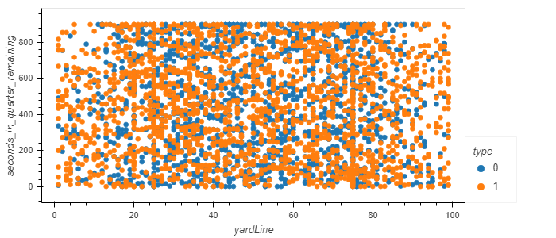

Findings
Model Findings
The UT Play Caller's goal is to predict what the opposing team would call in a given game time situation, then recommend the type of defense to call for the University of Texas. did some awesome stuff with models; here are the top features used:
Feature Choices
- Selected features for user input included:
- Half
- Time Remaining
- Down
- Distance to go
Random Forest Classifier
We initially selected a supervised learning model to begin the machine learning algorithms.
And the Random Forest Classifier being our first choice also turned out to be
the most reliable.
A concern of any machine learning model is overfitting. Borrowing from
Jason Brownlee,
we used that visualization style to identify how deep the forest can be run before the machine learning
model becomes too specific to the given data set.
Overfit plot. A max depth of anymore than 7 will result in overfitting.
Multiple Linear Regression
Travis insert his text here and an image.
K-Means
K-Means is an unsupervised learning model that attempts to identify clustering issues.
In order find the optimum number of clusters for the K-Means model, plot
the clusters on the x-axis and on the y-axis, plot the amount of variation
in the data set, also called inertia. This analysis indicates that three clusters are
sufficient to optimize this machine learning model.

FYI, in the graph below, Rush is 1; pass is 0.

2-D scatter plot showing pass and rush play calls.
Given the plot above, it will be very difficult for this unsupervised learning model to make accurate predictions.
Look at the interactive graph page to see how these correlate to the predicted play.
Selected model
Ultimately, we stuck with our initial choice of machine learning models, the Random Forest Classifier.
Limitations of the model selected.
Strengths of model chosen
Recommendations for future development
some text about the model used